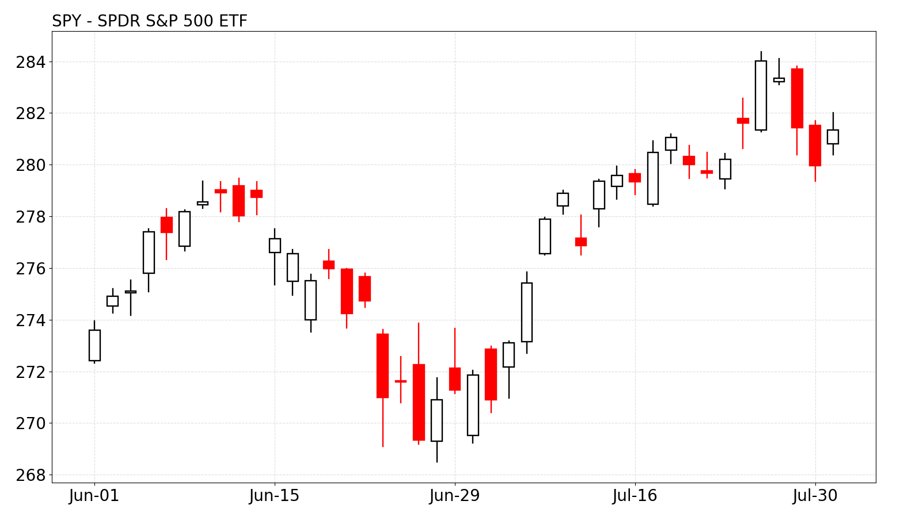
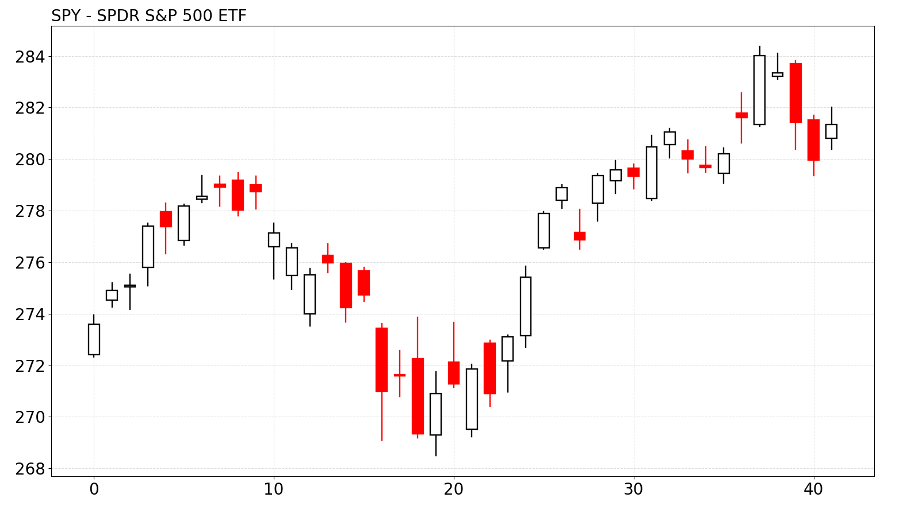
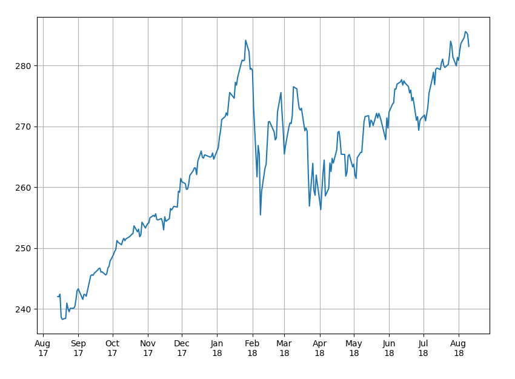

In this tutorial we will create some financial charts. It will be a candlestick chart of SPDR S&P 500 ETF. The chart will look like this:
To create a chart, we need some data. You can get market data from different sources. I downloaded two months of historical SPY data from Yahoo Finance and saved it in a file. The file is in CSV format and looks like this:
We will use Pandas library to read CSV file into a DataFrame object. DataFrame is a 2-dimensional labeled data structure with columns of potentially different types. You can think of it like a spreadsheet or SQL table.
We will use Matplotlib library for charting. At some point matplotlib.finance module provided API for drawing candlestick charts. That module was deprecated and eventually renamed to mpl_finance. I never liked the implementation in mpl_finance module, so I created my own.
The following code draws the chart. All candlestick drawing is in a separate function, plot_candlesticks().
The following function draws the chart.
The chart should look like this.
Now, let's customize display of x-axis labels. Insert the following code before plt.show().
Now the chart looks like this.
